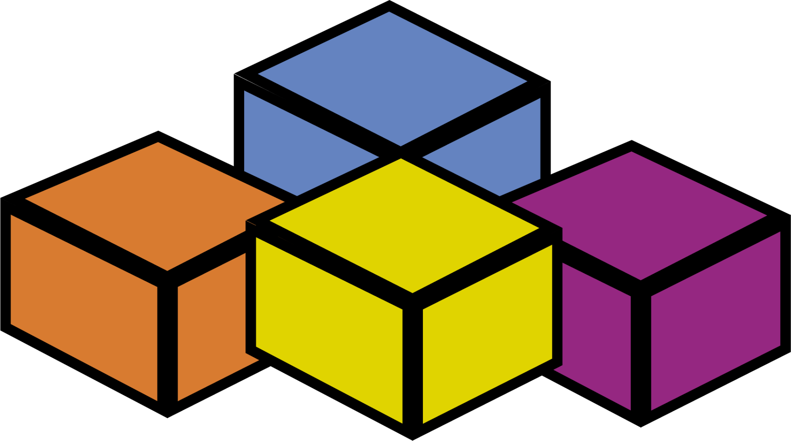
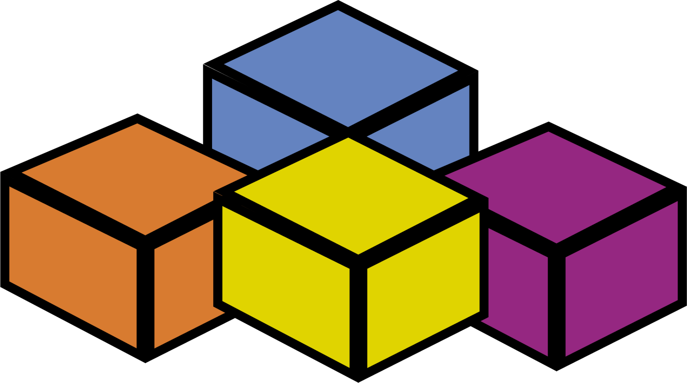

My Portfolio
About me
My name is Samuel Ballu, a Master's student specializing in Artificial Intelligence, with a double degree in Statistical Engineering and Economic Modeling. My academic journey has equipped me with strong skills in data analysis, statistical modeling, and the development of Machine Learning and Deep Learning algorithms. Passionate about the evolution of artificial intelligence and its potential impact on our daily lives, I focus on applying these technologies to real-world projects.
My Passions and Hobbies
I played basketball for 10 years at the regional level, where I won four titles. This experience taught me the importance of teamwork, discipline, and resilience—values I also apply to my academic and professional projects. I had the privilege of being my team's captain many times, serving as a conduit for the coach's instructions to my teammates.
For the past five years, I've also been playing beach volleyball with my friends. This sport allows me to unwind and maintain a healthy balance between work and pleasure.
Outside of sports, I'm a huge cinema enthusiast. My favorite directors include Christopher Nolan and Quentin Tarantino, whose works I admire for their creativity, intricate storytelling, and ability to captivate audiences. I often find parallels between the complexity of their narratives and how artificial intelligence models can be used to solve complex problems.
My Skills
 Python
Python
 R/RShiny
R/RShiny
 SQL/NoSQL
 VBA
SQL/NoSQL
 VBA
 SAS
SAS
 PowerBI
PowerBI
 HTML/CSS
Machine Learning
Deep Learning
AI
Language Processing
Signal And Image Processing
Time Series
Supervised Learning
Unsupervised Learning
Optimisation
Graph
HTML/CSS
Machine Learning
Deep Learning
AI
Language Processing
Signal And Image Processing
Time Series
Supervised Learning
Unsupervised Learning
Optimisation
Graph
My Background

My academic journey began with a Technical Degree (DUT) in Statistics and Business Intelligence at the Université de Pau and Pays de l'Adour from 2020 to 2022. I then pursued a Bachelor's degree in Statistics at the Université de Bretagne Sud in Vannes, where I excelled, ranking 2nd out of 56 students. Currently, I am working towards a prestigious double degree: a Master's in Statistics, Data Science, and Artificial Intelligence, alongside a Magister in Statistics and Economic Modeling at the Université de Rennes I et II, which I expect to complete with honors in 2025.
Throughout my studies, I have gained valuable professional experience through internships and seasonal work. I completed an internship at THALES's Reliability Department in Chatellerault from April to July 2022, where I developed a Power BI dashboard for product defect detection and honed my skills in Power BI and DAX coding. This was followed by another internship at MECADAQ's Finance and HR Department in Tarnos from May to August 2024, where I created an automatic and interactive dashboard using VBA for confidential data and developed visual indicators for error detection. Additionally, I have worked as a restaurant employee during the summers of 2020 to 2023, demonstrating my ability to work in fast-paced environments and collaborate effectively in teams. With this solid foundation in both academic knowledge and practical experience, I am now seeking a 6-month end-of-studies internship in Data Science starting from January 2025 to further advance my career in the field.
 LinkedIn
LinkedIn Email
Email